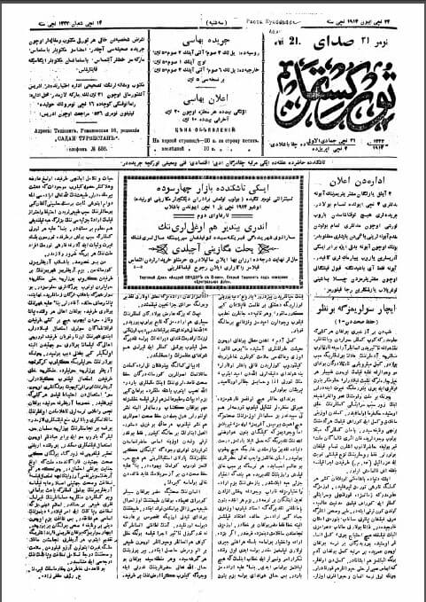
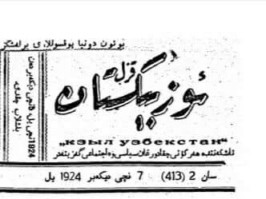
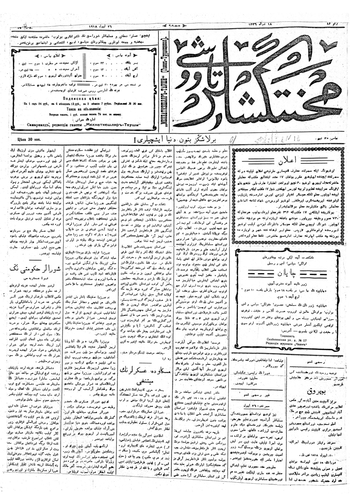
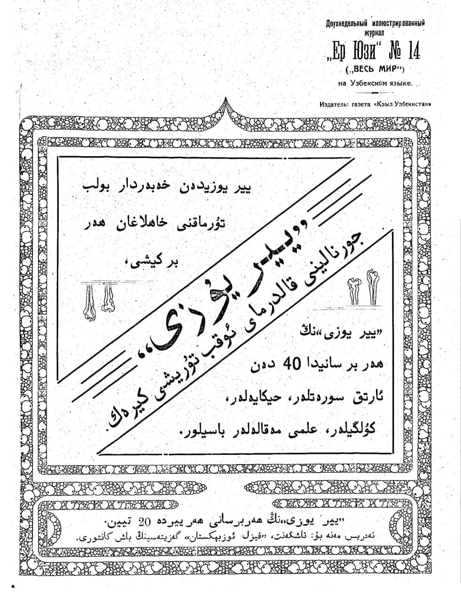
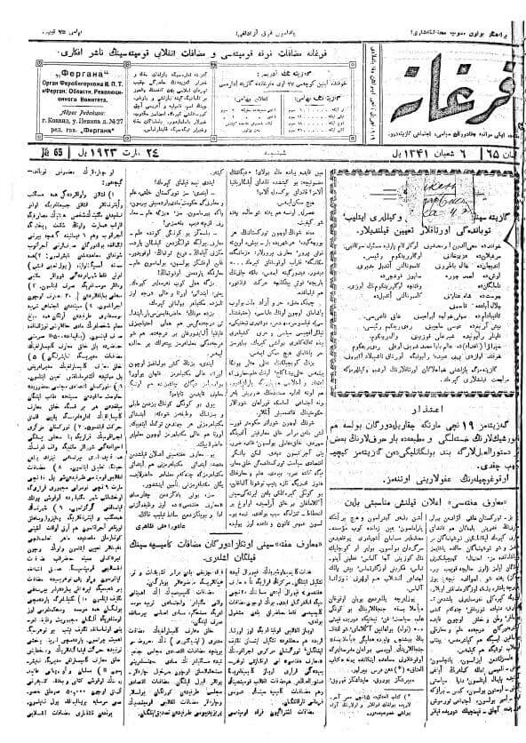

«Oyina» jurnali va milliy o'zlikni anglash masalalari
Mahmudxo'ja Behbudiyning «Oyina» jurnalidagi til, madaniyat, millat birligi va ta'lim to'g'risidagi maqolalarining g'oyaviy-badiiy tahlili.

Turkiston milliy matbuotining vujudga kelishi va taqdiri
1905-1918 yillarda chiqqan «Taraqqiy», «Xurshid», «Shuhrat», «Sadoi Turkiston» gazetalarining o'zbek publitsistikasi rivojidagi hissasi.

«Sadoi Farg'ona» gazetasining ma'rifiy yo'nalishi
Obidjon Mahmudov muharrirligida Qo'qonda chop etilgan «Sadoi Farg'ona» gazetasida iqtisod, bank ishi, paxtachilik va ta'lim masalalari yoritilishi.
'Turkiston viloyatining gazeti' va jadidlar munozarasi
Gazeta sahifalarida chop etilgan ilk jadid maqolalari, ta'lim islohoti va jamiyat hayotidagi o'zgarishlar.
Tahlil
Jurnal'Al-Izoh' jurnali faoliyati va diniy-ma'rifiy qarashlar
Ulamolar va jadidlar o'rtasidagi ilmiy muloqot, fiqh va zamonaviylik masalalari ko'tarilgan nashr.
Tahlil
Gazeta'Sadoyi Farg'ona' gazetasi sahifalarida milliy uyg'onish
Obidjon Mahmudov muharrirligida chop etilgan Farg'ona vodiysi jadidlarining bosh minbari.
Tahlil